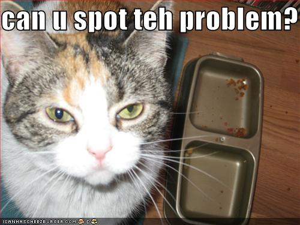

unobtrusive metaprogramming
Sean O’Halpin
Ruby Manor, 2008-11-22
wtf?
Senior Software Engineer, BBC
FM&TA&MiM&M
one dubious distinction
value for money
- 8 hours – 1 hour for lunch = 7 hours = 420 minutes
- 12 quid / 420 = 2.86p * 8 minutes ~ 23p
unobtrusive
- “doesn’t stick out”
- not in your face
- polite, considerate ~ MINASWAN
metaprogramming
- “Programs that write programs are the happiest programs in the world.” – Andrew Hume
a kitten dies
“every time you monkeypatch Object, a kitten dies”
kitty-safe metaprogamming
what we want

rails pwns ruby
- ActiveSupport
irb(main):003:0> [Kernel, Object, Class, Module].inject({}) {
|hash, klass| hash[klass] = klass.methods.size; hash}
=> {Module=>76, Class=>76, Kernel=>135, Object=>75}
irb(main):009:0> require 'activesupport'
=> true
irb(main):011:0> [Kernel, Object, Class, Module, Array, Hash].inject({}) {
|hash, klass| hash[klass] = klass.methods.size; hash}
=> {Module=>173, Array=>173, Class=>173, Kernel=>207, Hash=>174, Object=>172}
rails pwns ruby – again
- Array.second, .third
- inspect – on class, hits db
- to_s – with params
- Object.try
and again and again
irb(main):008:0> as_object_methods.sort => ["`", "acts_like?", "alias_attribute", "alias_method_chain", "as_load_path", "attr_accessor_with_default", "attr_internal", "attr_internal_accessor", "attr_internal_naming_format", "attr_internal_naming_format=", "attr_internal_reader", "attr_internal_writer", "b64encode", "blank?", "breakpoint", "cattr_accessor", "cattr_reader", "cattr_writer", "class_inheritable_accessor", "class_inheritable_array", "class_inheritable_array_writer", "class_inheritable_hash", "class_inheritable_hash_writer", "class_inheritable_reader", "class_inheritable_writer", "copy_instance_variables_from", "daemonize", "dclone", "debugger", "decode64", "decode_b", "delegate", "deprecate", "deprecated_method_warning", "deprecation_horizon", "duplicable?", "enable_warnings", "encode64", "enum_for", "extend_with_included_modules_from", "extended_by", "find_hidden_method", "included_in_classes", "inheritable_attributes", "instance_exec", "instance_values", "instance_variable_names", "load", "local_constant_names", "local_constants", "mattr_accessor", "mattr_reader", "mattr_writer", "method_added", "model_name", "parent", "parents", "rails_original_const_missing", "read_inheritable_attribute", "remove_class", "remove_subclasses", "remove_subclasses_of", "require", "require_association", "require_dependency", "require_library_or_gem", "require_or_load", "reset_inheritable_attributes", "returning", "send!", "silence_stderr", "silence_stream", "silence_warnings", "subclasses", "subclasses_of", "superclass_delegating_accessor", "superclass_delegating_reader", "superclass_delegating_writer", "suppress", "to_enum", "to_json", "to_param", "to_query", "unloadable", "with_options", "write_inheritable_array", "write_inheritable_attribute", "write_inheritable_hash"]
the problem

why is this bad?
- namespace pollution
- documentation pollution
- cognitive pollution
namespace pollution
- you can’t use the names you want
- your code is not safe
- clashes = debugging hell
documentation pollution
- rdoc – rubydoc
- to_yaml
irb(main):003:0> Date.new.to_yaml
NoMethodError: undefined method `to_yaml' for #<Date: -1/2,0,2299161>
cognitive pollution
- what is an Object?
- what is a Hash?
- what is an Array?
why does this happen?
because it’s the lazy easy way:
class Module
def pwn(who)
p "#{who} hav bin pwned"
end
end
class Foo
pwn :me
end
halp!
kitty-safe metaprogramming
- indirect access
- functions and proxies
- namespaces
- hide your mess
functions
class Doodle
module Utils
class << self
# Unnest arrays by one level of nesting, e.g. [1, [[2], 3]] =>
# [1, [2], 3].
def flatten_first_level(enum)
enum.inject([]) {|arr, i|
if i.kind_of?(Array)
arr.push(*i)
else
arr.push(i)
end
}
end
end
end
end
a = [[1, 2, [3, [4, 5]]], [6]]
Doodle::Utils.flatten_first_level(a) # => [1, 2, [3, [4, 5]], 6]
proxies
- indirect access to object
- examples: examples 1 & 2
implementation 1
class ClassExtensions
attr_accessor :model
def initialize(model, &block)
@model = model
end
# DSL method
def has(*args)
model.class_eval { attr_accessor(*args) }
end
end
def DSL(klass, &block)
ce = ClassExtensions.new(klass)
ce.instance_eval(&block)
end
example 1
require 'imp1'
class Foo
end
DSL(Foo) do
has :name
end
foo = Foo.new
foo.name = 'Trillian'
foo.name # => "Trillian"
Foo.methods(false) # => []
implementation 2
class ClassExtensions
# as before
end
def dsl(klass = nil, &block)
klass = eval("self", block.binding)
ce = ClassExtensions.new(klass)
ce.instance_eval(&block)
end
example 2
require 'imp2'
class Bar
dsl do
has :name
end
end
bar = Bar.new
bar.name = 'Arthur'
bar.name # => "Arthur"
Bar.methods(false) # => []
namespaces
- a space in which you put your names so they don’t clash with other people’s names
- in Ruby, they’re called “modules”
- examples: examples 3, 4
implementation 3
module KittySafe
class ClassExtensions
# as before
end
module ModuleMethods
def dsl(klass = nil, &block)
klass = eval("self", block.binding) if klass.nil?
ClassExtensions.new(klass).instance_eval(&block)
end
end
extend ModuleMethods
def self.included(other)
other.extend ModuleMethods
end
end
example 3 – module function
require 'imp3'
class Baz
KittySafe.dsl do
has :name
end
end
baz = Baz.new
baz.name = "Ford"
baz.name # => "Ford"
Baz.methods(false) # => []
example 4 – inclusion
require 'imp3'
class Cat
include KittySafe
dsl do
has :name
end
end
fluff = Cat.new
fluff.name = "Fluff"
fluff.name # => "Fluff"
example 5 – inheritance
class Kitty < Cat
dsl do
has :cuteness
end
end
kitty = Kitty.new
kitty.name = "Kitty"
kitty.cuteness = 10
kitty.name # => "Kitty"
kitty.cuteness # => 10
hide your mess
example from doodle
- hiding intrusions
- @__doodle__ variable
- instance_variables
smoke and mirrors
module SmokeAndMirrors
# redefine instance_variables to ignore our private @__doodle__ variable
# (hack to fool yaml and anything else that queries instance_variables)
meth = Object.instance_method(:instance_variables)
define_method :instance_variables do
meth.bind(self).call.reject{ |x| x.to_s =~ /@__doodle__/}
end
# hide @__doodle__ from inspect
def inspect
super.gsub(/\s*@__doodle__=,/,'').gsub(/,?\s*@__doodle__=/,'')
end
# fix for pp
def pretty_print(q)
q.pp_object(self)
end
end
don’t
- monkeypatch Object, Kernel, Module, Class, Hash, Array, etc.
do
- use proxies and functions for indirect access
- use modules to segregate your names